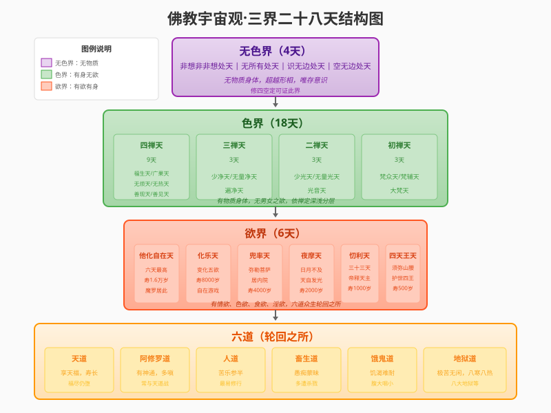

三界（梵语：trayo dhātavaḥ）是佛教宇宙观的核心概念，指众生轮回所处的三个层次世界。依境界高低分为欲界、色界、无色界，共二十八重天。

三界二十八天结构图
一、无色界（4天）
无色界位于三界最高处，众生已超越物质形相，唯有意识存在。依修习四空定深浅分为四层：
- 空无边处天：超越色界，唯见虚空无边
- 识无边处天：超越虚空，唯见识无边
- 无所有处天：超越识处，见无所有
- 非想非非想处天：无色界最高，心识极微细
二、色界（18天）
色界位于欲界之上，众生仍有清净微妙的物质身体，但已远离男女之欲与食欲。依修习四禅定的深浅分为四禅十八天：
| 初禅三天 | 二禅三天 | 三禅三天 | 四禅九天 |
|---|---|---|---|
| 梵众天 | 少光天 | 少净天 | 福生天 |
| 梵辅天 | 无量光天 | 无量净天 | 广果天 |
| 大梵天 | 光音天 | 遍净天 | 无烦天 |
| 无热天 | |||
| 善现天 | |||
| 善见天 | |||
| 色究竟天 |
注：四禅九天中，后五天（无烦天、无热天、善现天、善见天、色究竟天）又称五不还天，为三果圣人所居。
三、欲界（6天）
欲界是三界最低层，众生具有情欲、色欲、食欲、淫欲等强烈欲念。欲界包含六欲天及地狱、饿鬼、畜生、人、阿修罗五道，合称六道，为众生轮回之所。
| 天名 | 特点 | 天寿 |
|---|---|---|
| 四天王天 | 位于须弥山腰，护世四王守护四大部洲 | 500岁（1日=人间50年） |
| 忉利天 | 三十三天，帝释天主居中，八方各四天 | 1000岁（1日=人间100年） |
| 夜摩天 | 日月光明不及，天人自有光明 | 2000岁（1日=人间200年） |
| 兜率天 | 分内外院，内院为弥勒菩萨居所 | 4000岁（1日=人间400年） |
| 化乐天 | 能变化五欲境界，自在游戏 | 8000岁（1日=人间800年） |
| 他化自在天 | 欲界最高天，魔王波旬居此，常扰修行人 | 16000岁（1日=人间1600年） |
四、六道（轮回之所）
欲界包含六道众生，众生依业力在六道中轮回不息：
- 天道：享天福，寿命极长，但福尽仍堕
- 阿修罗道：有神通福报，但多嗔好斗，常与天道争战
- 人道：苦乐参半，最易修行悟道
- 畜生道：愚痴蒙昧，多遭杀戮之苦
- 饿鬼道：饥渴难耐，腹大咽小，不得饮食
- 地狱道：极苦无闲，有八寒八热等诸大地狱
五、修行出离
佛教认为三界皆苦，众生因无明烦恼而在三界中轮回不息。欲出离三界，需：
- 修五戒十善：可生欲界天
- 修四禅定：可生色界天
- 修四空定：可生无色界天
- 修出世圣道：证阿罗汉果，跳出三界，不受后有
跳出三界外，不在五行中
这是佛教修行的终极目标——超越三界轮回，证得涅槃解脱，不再受生死之苦。